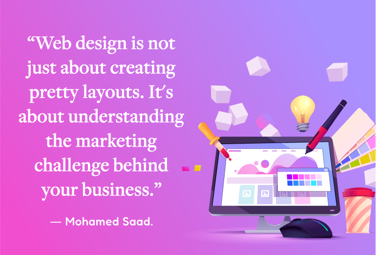
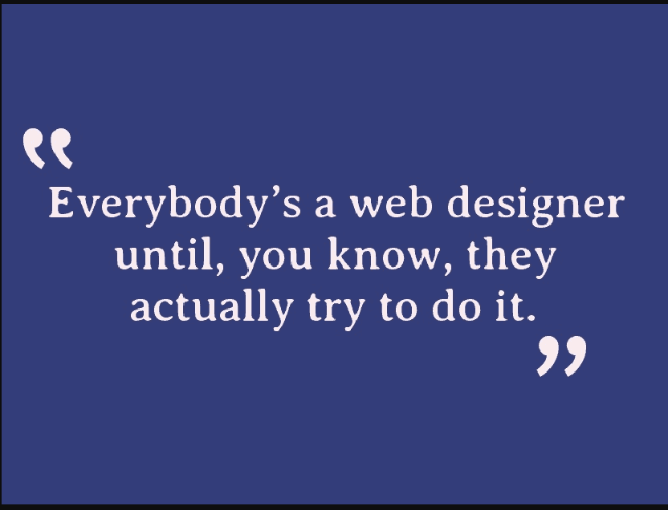
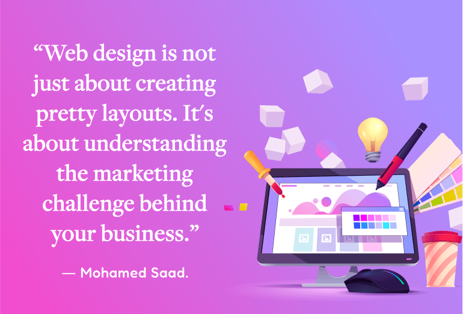
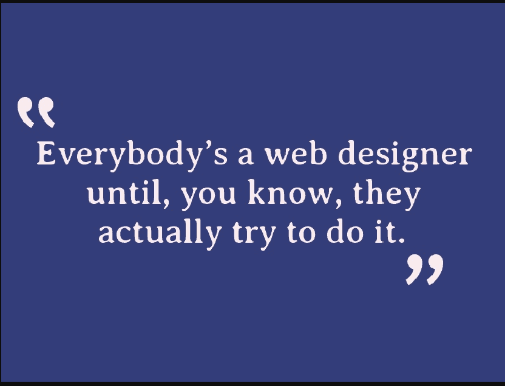

Passionate and dedicated web designer with a background in Computer Science and Engineering. Proficient in HTML, CSS, and JavaScript, I bring a unique blend of technical skills and creative flair to every project. Committed to delivering excellence, I thrive on coding and design challenges. My journey in Computer Science has equipped me with hands-on experience in web development. With a keen eye for detail and a passion for innovation, I am enthusiastic about creating engaging and user-friendly websites. Eager to contribute my skills to impactful projects and continuously expand my knowledge in the dynamic world of web development.
 


